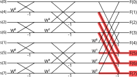

{{ title }}
Fourier transforms are used to transform a signal from time range to frequency range. They operate with complex values, and take complex numbers as inputs, even though in most cases our input will consist of real numbers. If we supply zero as each imaginary input, the result will be symmetrical, and roughly half of the resulting numbers will not give us any more information. Can we exploit this redundancy for speedups?
Naive removals
Take a look at a DIT butterfly diagram for the radix two case. We can remove everything which is connected to the last half (F(5), F(6) and F(7), but not F(4), cause it is the Nyquist frequency and has no pair), but we can only spare those calculations, whose are not needed anywhere else:
A radix 2 FFT takes N/2*log(N) multiplications and N*log(N) additions/substractions, for N=8, this means 12 and 24 respectively. With this method shown above we managed to reduce the number of additions taken by 3, or in the more general case N/2-1. It's not much sadly, and as N increases this gain will only get less significant.
Things only get a bit better in DIF (decimation in frequency) case:
Now we could reduce the multiplication count by 3 as well. But in conclusion, these methods are disappointingly ineffective, they aren't close to the two times speedup, which I would have intuitively guessed, which means we have to look in an other direction.
You can actually achieve similar results with the first (DIT) case too, if you play around with the Fs you want to remove; for example F(1), F(5) and F(6).
Odds and evens
What if instead of accelerating a singe FFT, we would do two transformations at the same time by packing two real valued inputs together? The easiest way to do this is to pack the second signal into the imaginary components, or in other words, multiply it by j, and add to the first one.
{{ formula("pack.tex") }}Discrete Fourier transform is essentially a matrix multiplication, which is a linear operation. Thus we can write:
{{ formula("pack_dft.tex") }}This means that the results will be packed in the way and can be separated later, but tells us nothing about how should we do this separation. In order to accomplish this, we'll need to look around the odd even properties of the functions.
A function is even, if it is symmetrical to the y axis, or in other terms, f(x) = f(-x). Similarly a function is odd, if it is symmetrical to the origin, in other terms, f(x) = -f(-x). Why are they useful? Because first, they transform very nicely, and second, every function can be decomposed into odd and even parts. The method for the second statement is relatively easy:
{{ formula("oddeven_1.tex") }}We can write something similar for the opposite side of f:
{{ formula("oddeven_2.tex") }}Now we have two equatations and two unknowns, something we can solve:
{{ formula("oddeven_3.tex", amsmath=False) }} {{ formula("oddeven_4.tex", amsmath=False) }}
Hey hey hey! How can I use something like f(-x), if all I have is an array indexed from zero? Well, the Discrete Fourier transform assumes that our function is periodic, and it's inter- and extrapolated curve will also act in a periodic manner. If we extended the array notation, f[N] would be the same as f[0], where N is the length of our array. That means we can utilize modular arithmetic to get those indices:
{{ formula("oddeven_array.tex") }}I've never seen this mod expression in the texts I've browsed through, they've just simply added N to -x. This is also correct, except for index 0, so you have to be careful:
{{ formula("oddeven_array_plus.tex") }}Now we can split arrays into odd and even parts as well. The next question is: how does Fourier transform affects purely odd and even functions? This transform decomposes signals into sines and cosines, and it's not hard to see that sines are odd functions and cosines are even. The inverse Fourier transform reverses this step, but the inverse has a more intuitive meaning to it, it's the synthesis, when the components are added together.
If we accumulate pure cosine waves which are even, the result will be even as well, and the same thing can be said for sines and odds. Since the odd-even decomposition is unambiguous, a purely even function will yield a real only signal in the frequency range, as reals correspond to cosines. In the same manner, purely odd functions will result in a purely imaginary frequency range.
We can also define oddity for imaginary signals, and the transforms are easy, since the DFT is a linear operation, all it takes is to multiply it by j in the end. Imaginary even functions will have an imaginary frequency range, and imaginary odd functions will have a real frequency range.
To sum it up, this is what we have now in terms of odds and evens, reals and imaginaries:
We only need to figure out now, how the transformed signals act in terms of oddities. Solving for the real case is sufficient, since the imaginary ones will be the same, multiplying by j does not affect oddity. The proof for that is more formal. Let f(x) denote the signal in the time domain and F(X) in the frequency domain. The DFT by definition is:
{{ formula("dft_def.tex", amsmath=False) }}We can also express F[-X] by this:
{{ formula("dft_minusx.tex", amsmath=False) }}Our goal is to get back the original formula. Assuming f(x) is even:
{{ formula("dft_even.tex", amsmath=False) }}The ordering in the summation has changed, but it does not affect our results. If integrals and variable renaming makes more sense to you, here's the proof for the continous case.
We can do the same for odds, and as a result, we can see that the Fourier transform preserves oddity regardless of it being real or imaginary:
{{ formula("dft_odd.tex", amsmath=False) }}No more question marks in our table anymore:
To use this in practice, let's recap how our packed real signals (x(t) and y(t)) look like:
{{ formula("pack.tex") }}After transformation:
{{ formula("pack_dft_2.tex") }}We have to be careful, X(T) is NOT the transform of x(t) and similarly Y(T) is NOT the transform of y(t). To extract the transform of x(t), we need to sum up the real-even, and the imaginary-odd parts. Let Z_x(T) denote this:
{{ formula("pack_even.tex", amsmath=False) }}We can make simplifications by extracting the denominators:
{{ formula("pack_even_2.tex", amsmath=False) }}We can see our original Z(T) on the left side, and the complex conjugate of Z(T) on the right side:
{{ formula("pack_even_3.tex", amsmath=False) }}We can do something similar for Z_y(T), in that case we need to sum up the real-odd, and the imaginary-even parts. Note the j in the denominators: we multiplied y(t) by j in the first place, now we have to reverse this operation.
{{ formula("pack_odd.tex", amsmath=False) }}After extraction:
{{ formula("pack_odd_2.tex", amsmath=False) }}And as the final result we have to substract this conjugate instead of adding it:
{{ formula("pack_odd_3.tex", amsmath=False) }}You can also simplify this division by j to a multiplication with -j.
To see this in practice, here's an example in python using numpy, and its existing fft functions:
{{ code("pack_two_fft.py", "python") }}As you can see, the results match, and this method works indeed.
Splitting and packing a single FFT
The radix 2 FFT had the following outline:
- Split the data into odd and even indices.
- Calculate two separate FFTs on the subarrays.
- Merge them together by some addition, substraction and twiddle factors.
Judgng from the previous method, it seems logical, that we could utlize this to complete the first two steps. We can split our original array (whose size must be divisible by 2), and than pack the even or odd indices into the imaginary part of the input. Assuming we already have Z_x and Z_y, we can get the full, length N spectrum, Z_all, by: (if you don't understand this, take a look at the DIT butterfly diagram shown at the very beginning of this article)
{{ formula("split_pack_1.tex") }}The semicolon marks concatenation here and W is the N/2 sized vector of the twiddle factors of N. An example implementation in python and numpy provided below:
{{ code("split_two_fft.py", "python") }}Of course, this python example does not show the full picture. If you want to implement this method efficiently, you will also have to take various things into consideration like initial permutations (how bitwise reverse index works here), how to utilize as little space as possible, since these concatenations allocate new arrays each time, or how to access Z in multiple ways without creating a new array from it using flip, roll and conj.
Sources
- Ronald N. Bracewell: The Fourier Transform and its Applications third edition
- H. Sorenson et al.: Real-Valued Fast Fourier Transform Algorithms
- Richard C. Singleton: On Computing The Fast Fourier Transform
- Robert Matusiak: Implementing Fast Fourier Transform Algorithms of Real-Valued Sequences With the TMS320 DSP Platform